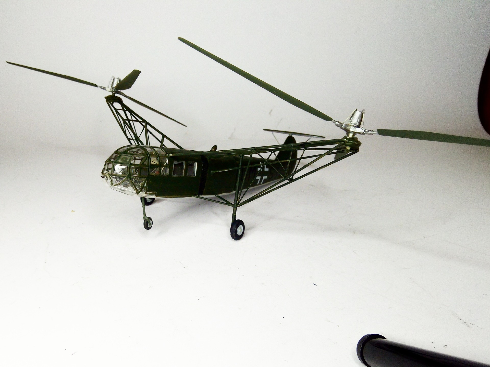
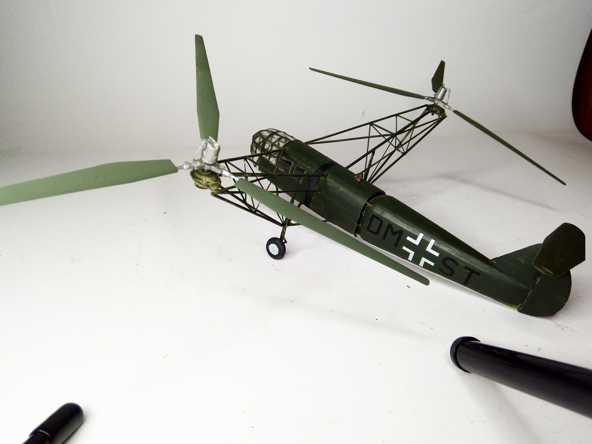

Aerei · scale model archive
Focke-Achgelis Fa 223
Focke-Achgelis Fa 223 — Kit: Huma. Scale 1/72 Operational helicopter in WW2 Delicate kit #1/72 #Huma #FockeAchgelis

Photo gallery

English description
Scale 1/72
Operational helicopter in WW2
Delicate kit
#1/72 #Huma #FockeAchgelis
Descrizione italiana
Elicottero operativo nella Seconda guerra mondiale. Kit delicato.